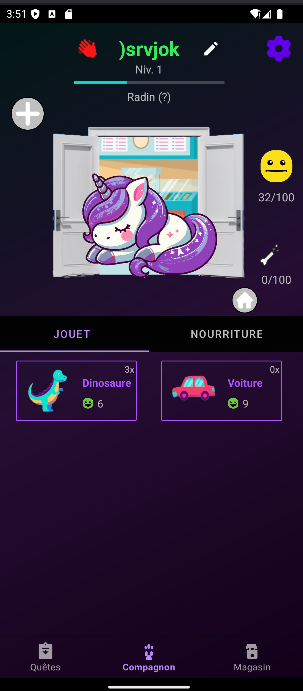
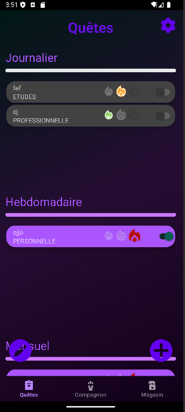
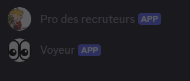

Découvrez mes compétences, expériences et projets.
Projets
Portfolio v1
Premier portfolio réaliser durant mon année en BUT informatique
Vakna


1ère SAE du BUT en 3ème année, avec mon équipe de SAE nous avons décidé de réaliser
une application mobile qui a pour principe dans le style d'un tamagotchi de s'occuper d'un
compagnon virtuel en réalisant des tâches que l'utilisateur créera pour obtenir des
récompenses et nourrir ou jouet avec son compagnon
Surveillance de machine à bobiner
Réaliser en 2ème année de BTS, ce projet était de réaliser un système de prévention pour
prévenir au client si la machine avait des problèmes de surchauffe ou de moteur.
Bot Discord

Un petit projet personnel j'ai développé un petit bot discord pour un saveur en javascript,
l'objectif de ce bot étant calculer les stats d'un serveur afin de savoir les membres actifs
présents et les membres plus actif depuis un certain temps